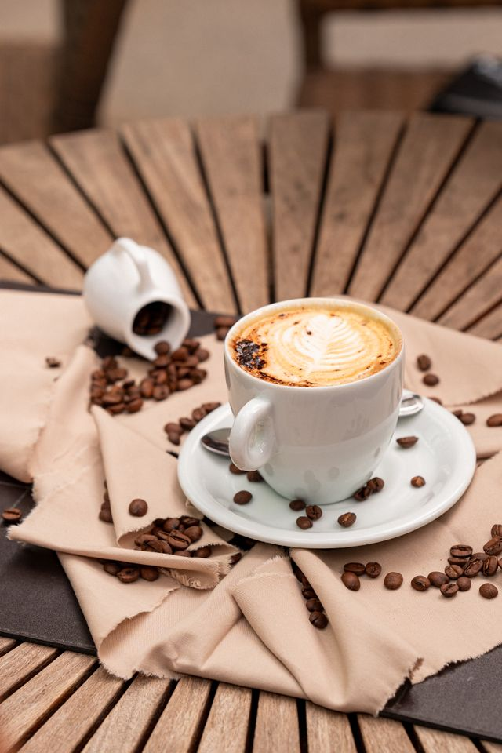

Nossa História, Seu Momento
Fundada no coração das montanhas cafeeiras, a Grão & Arte nasceu com a missão de transformar o hábito diário de tomar café em uma experiência artística e sensorial única.
Trabalhamos exclusivamente com pequenos produtores locais, garantindo grãos selecionados de forma sustentável, com torra artesanal controlada por nossos mestres torrefadores para extrair o máximo de doçura, corpo e acidez de cada variedade.
Sustentabilidade
Apoio direto ao produtor e manejo consciente da terra para as futuras gerações.
Excelência
Processo de torra sob medida e rigoroso controle de qualidade em cada lote.
